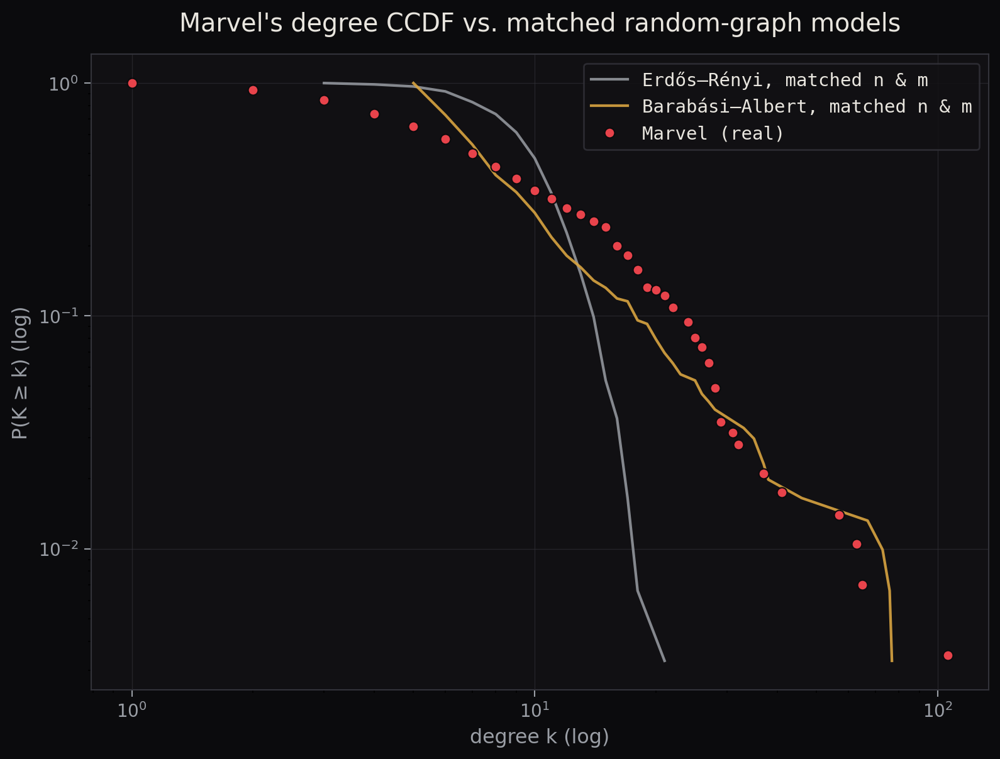
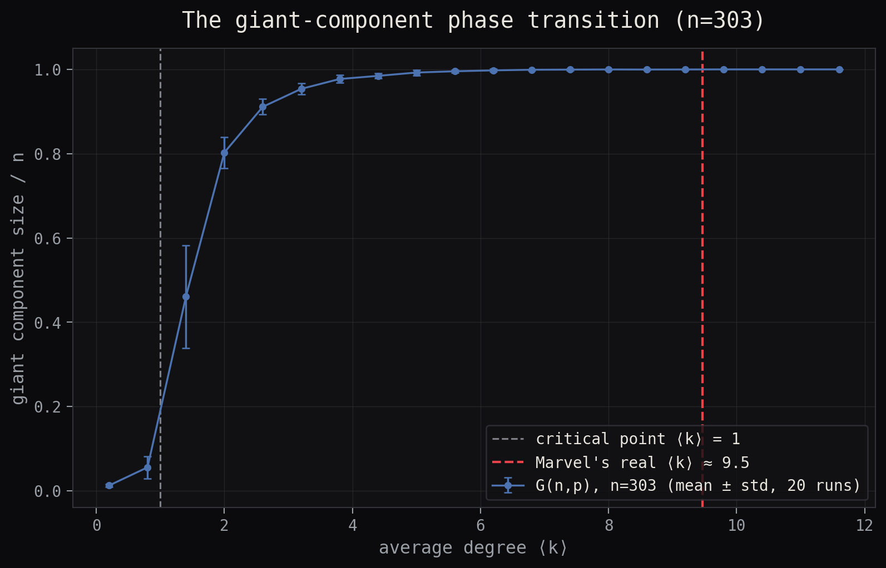
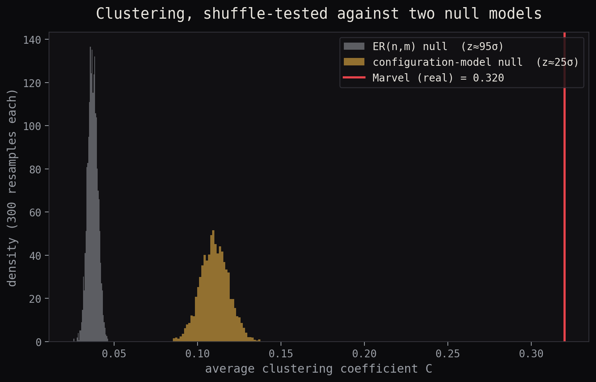
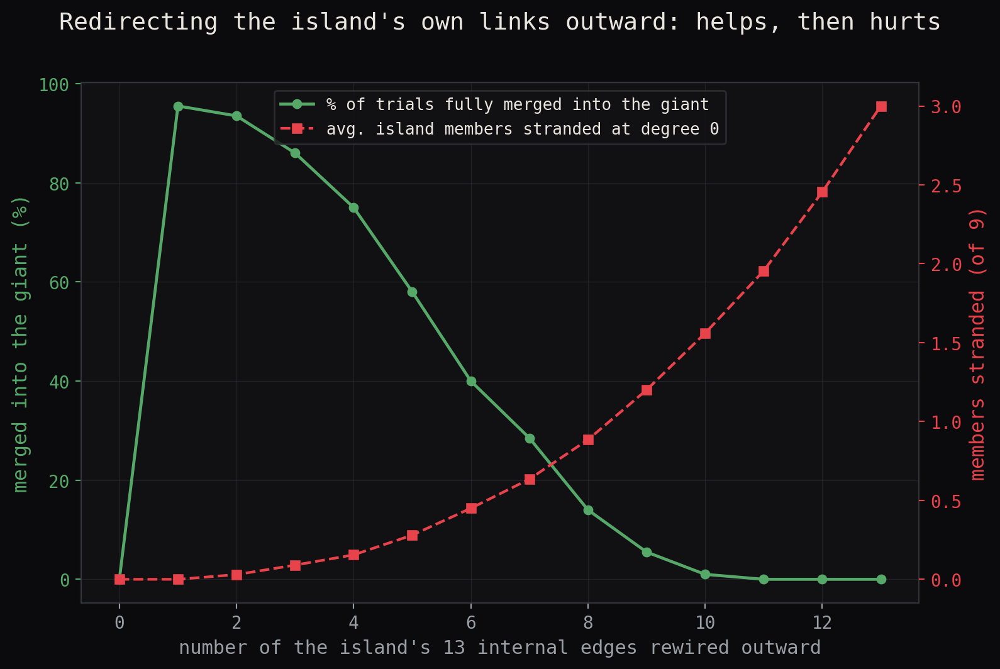
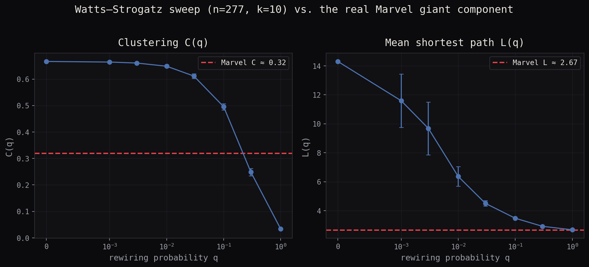

Last week we found the shape of the network: a 277-character giant component, a 9-member island, 17 characters alone. This week's models ask the harder question — how much of that shape is just what happens when you scatter ~1,400 links across 303 nodes, and how much actually needs a story?
01Degree distribution: closer to which model?
We built two matched comparison networks — an Erdős–Rényi random graph and a
Barabási–Albert preferential-attachment network, both grown to Marvel's exact node
and edge count — and plotted all three degree distributions as CCDFs,
P(K ≥ k), the version that survives all the way into the sparse tail
instead of dissolving into binning noise.

A quick read of that plot would call it case closed: Marvel is heavy-tailed, the random graph isn't. But a log-log curve can make plenty of distributions look power-law-ish to the eye, even when they aren't one. We ran the Clauset–Shalizi–Newman maximum-likelihood fit on Marvel's real in-degree sequence:
CSN power-law fit — Marvel in-degree
α = 2.22 ± 0.12 · kmin = 5 · R vs. log-normal = −3.6 (p = 0.12) · R vs. exponential = +4.9 (p = 0.53)
Both comparisons land above the conventional p < 0.05 bar. Neither log-normal nor exponential is ruled out. At 303 nodes there just aren't enough characters past kmin=5 for the test to have real teeth.
So the honest claim is narrower than the plot suggests: Marvel's degree distribution is heavy-tailed and shaped far more like a growth-with-preference process than a homogeneous random one — but we can't statistically certify it as specifically a power law.
That Barabási–Albert curve above isn't just a backdrop — it's grown to Marvel's exact size (n=303, matched edge count) rather than left at the textbook 5,000 nodes. Its biggest hub tops out at degree 77 in this run. Spider-Man sits at 106. Even a model built specifically to produce runaway hubs, run at Marvel's actual size, undershoots the real thing — a reminder that "matching n and m" still leaves room for one run's luck, and that Wikipedia's editors funnel attention even harder than a generic preferential-attachment rule does.
02The giant component isn't the surprise
Erdős–Rényi theory predicts a sharp phase transition at ⟨k⟩ = 1: below it,
every component is small; above it, one giant component swallows an
O(n) share of the network. We swept ⟨k⟩ from 0.2 to 12 on 303-node
random graphs and marked where Marvel's real mean degree falls.

This is the trap that sits right at Marvel's density: a random graph would be almost entirely one component, with isolated nodes appearing only by chance. So the giant component swallowing 277/303 characters isn't evidence of anything special — density alone predicts that. What density alone does not predict is 17 characters at exactly zero links and a clean 9-member island cut off from everyone else, while sitting at a mean degree nine and a half times past the connectivity threshold. Section 05 comes back to exactly that gap.
03Shuffle-testing clustering
Pick a computed property, and shuffle-test it properly — not against a plain random graph (which changes everything at once) but against a degree-preserving configuration model, which keeps every character's exact number of links and only rewires who they connect to.

Reading the gap between the two nulls is the whole point of doing this properly. Going from the plain-random null (0.037) up to the degree-preserving null (0.110) is entirely explained by Marvel's hubs — high-degree characters mechanically buy some clustering for free, just by having more neighbors who might know each other. But Marvel's real clustering (0.320) still clears that null by roughly 25 standard deviations. Hub structure explains part of the story. Something else — shared team-ups, story arcs, whatever actually produces a Wikipedia link between two characters — is doing the rest, and a degree-only null can't see it.
Marvel's giant component has a clustering coefficient of 0.32, against 0.11 ± 0.01 for 300 configuration-model networks sharing its exact degree sequence — a gap too large to be explained by hub structure alone.
04Popular friends and the friendship paradox
The one we owed this post: the friendship paradox — "your friends have more friends than you, on average." It's not folklore, it's arithmetic. Averaged over every character's actual connections, a random friend has a mean degree of 22.1, against a network-wide average degree of just 9.5 — a friend is, on average, 2.3× more connected than you are. Check it node by node: 87.4% of the 286 connected characters have fewer links than the average of their own connections. The paradox isn't a quirk of a few extreme hubs skewing an average — it holds for the overwhelming majority of the cast individually.
The mechanism is exactly the hub structure section 01 found: a handful of wildly-popular characters occupy a hugely disproportionate share of everyone else's neighbor lists, dragging up the average neighbor you'd sample. Meet the three doing the most dragging, and the three characters for whom "friends" isn't even a defined concept in this dataset — pick a character below.
—
—
—
Hover any dot for the connection's name.
Spider-Man alone sits in 106 of the other 302 characters' link neighborhoods — a little over a third of the entire cast is one hop from him. Hulk and Wolverine each clear 60. On the other side, Baymax, Miracleman, and Yo-Yo Rodriguez have no recorded co-appearance with anyone in this snapshot at all, despite each having a real, well-known publication history — their "friend's average degree" is undefined for the same reason a room with no one in it has no average height. That's not a contradiction in the data; it's the friendship paradox's silent partner: the characters doing the most to drag the average up, and the characters who don't participate in the average at all, are opposite ends of the same distribution.
05The 17 were never really a finding
Take Marvel's degree sequence — the number of links every one of the 303 characters has — and rewire the network 300 times, keeping every degree fixed but randomizing who connects to whom. Zero-degree stays zero-degree by construction: a node with no stubs to rewire cannot end up with an edge, no matter how the rest of the network gets shuffled.
The contrast is the whole point. Under a plain random graph with Marvel's density, isolated characters should be essentially extinct — 0.02 of them, on average, out of 303. Seventeen actual isolates against that baseline looks like a screaming anomaly. But condition on the real degree sequence instead of discarding it, and the anomaly evaporates completely: the configuration model reproduces exactly 17 isolates, every single run, with standard deviation ≈0.1. There's no other possible outcome — those 17 characters have no recorded Wikipedia co-appearance with anyone else in the category, full stop. That's not a structural property of the Marvel universe. It's a property of what the snapshot happened to capture. The right way to have written last week's finding: 17 characters have no recorded links in this dataset — not the network isolates 17 characters.
06The island is a different story
Strikeforce: Morituri — the 9 characters whose whole premise is dying within a year of getting powers — isn't degree-zero. They have 13 links, all pointed at each other, forming one tightly connected internal component (density 0.36, degrees running from 2 up to Radian's internal hub-of-six). Their isolation is a different, weaker kind: no edge happens to leave the group, not no edges at all.
Run the same shuffle: take the full 303-node degree sequence — Radian keeps degree 6, every teammate keeps their real degree — and rewire. Unlike the 17, the island's separateness is not baked into the degree sequence:
Strikeforce: Morituri, reshuffled 300 times
Stays a clean, separate 9-node group: 0 / 300 times. At least one member picks up an outside edge: 300 / 300 times.
So the island staying sealed off is a real, contingent fact about how those 13 edges happen to be wired — not a guarantee like the isolates' zero-degree status. Which raises the natural question: how little would it actually take to spring them?
07The answer: exactly one link
Because the island is already one connected clump internally, adding a single edge from any one of the nine to any member of the 277-strong giant component merges the whole team into it at once — no partial credit needed, the island's own internal edges do the rest of the work for free.
One misplaced citation, one crossover issue, one Wikipedia editor linking Radian's page to Spider-Man's, and Strikeforce: Morituri stops being an island at all.
08But redirecting isn't the same as adding
There's a second way to "rewire" the island that looks similar but isn't: instead of adding a new outward link, take one of the team's own 13 internal edges and redirect it outward — the Watts–Strogatz move, keeping one endpoint fixed and reassigning the other. We swept this from 0 redirected edges up to all 13.

Redirecting a handful of edges works about as well as adding one from scratch — 95% merge at just one redirected edge. But push further and the curve reverses: each redirect keeps the pulled-out endpoint connected to the wider network while leaving the other endpoint one link short, with no guarantee anyone else picks up the slack. Redirect all 13 and the team isn't merged into anything — it's shredded into up to three brand-new degree-zero isolates, plus whatever fragments of the original 9 still cling to each other. Over-shuffling a small, tightly-knit component doesn't integrate it. It manufactures more of exactly the isolates section 05 was about.
09Why one shortcut is enough
This is the Watts–Strogatz result in miniature. We sized a proper WS sweep to match the giant component (n=277, k=10) and marked Marvel's real clustering and path length on it.

Marvel's real average path length, 2.67 hops, is already as short as a fully rewired (q=1) Watts–Strogatz network of the same size — while its clustering sits where only mild rewiring, somewhere around q≈0.15–0.2, would put a lattice. That gap is the small-world signature: distances collapse almost as soon as a few long-range shortcuts exist, while clustering barely notices, because a single shortcut can shorten many paths at once but only ever touches one or two local neighborhoods. It's the exact same mechanism behind section 07's result — one edge, not thirteen, is what it takes to fold an isolated pocket into a network that's already this well-shortcut. The 17 can't be rescued by any amount of shuffling; the island could have been rescued by one link the whole time.
10What this settles, what it doesn't
Marvel is not a random graph, and it isn't news that it isn't — nothing interesting ever is a random graph. The useful finding is narrower and comes straight out of controlling the comparison properly: the degree sequence alone (i.e. "some characters are hubs") accounts for real but partial structure in the tail shape, the clustering, and the friendship paradox alike. What's left over after that control — the residual heavy tail the CSN test can't fully pin down, the 25σ of clustering the configuration model can't explain, and the fact that an isolated team's separateness (unlike an isolated individual's) was never actually guaranteed — is where an actual story about the Marvel universe would have to live.